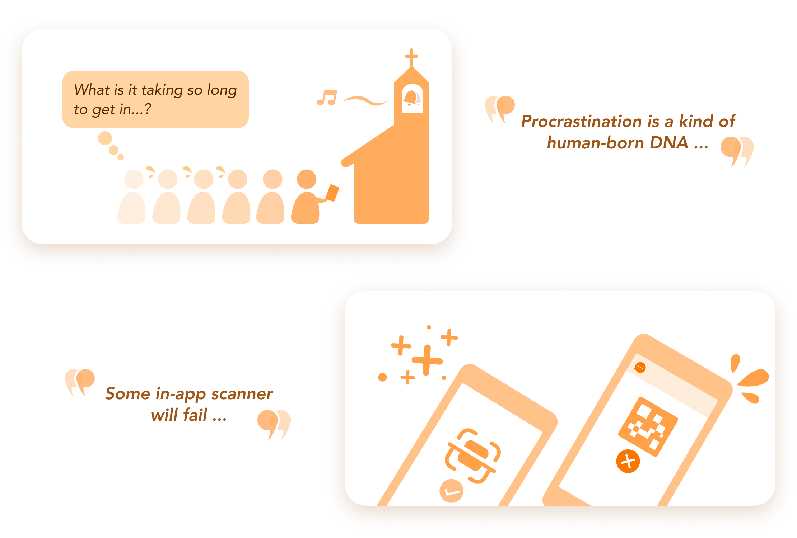
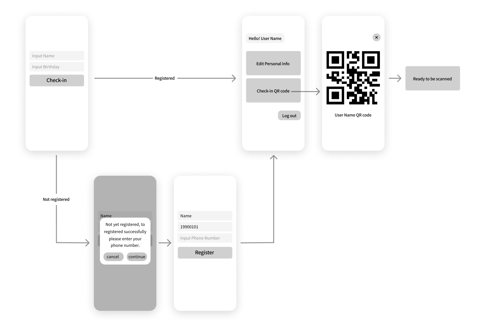
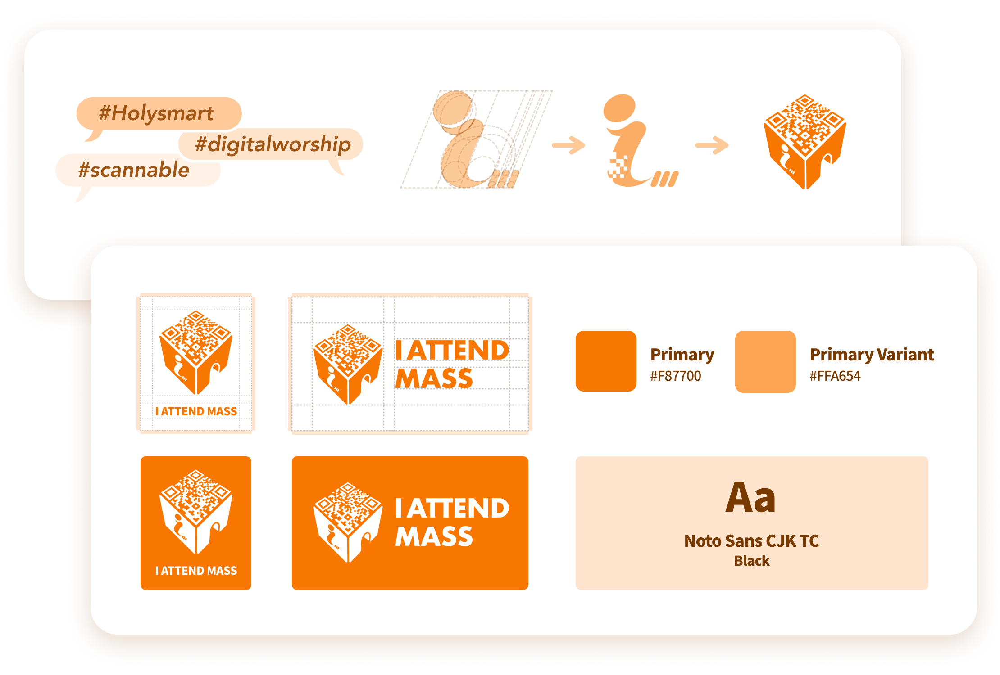
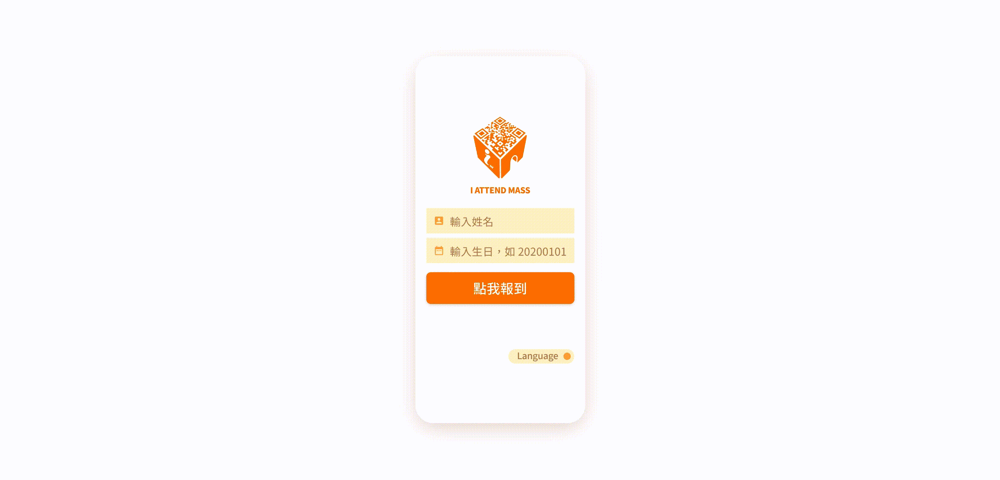
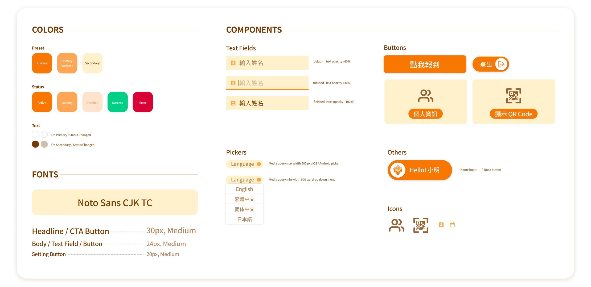
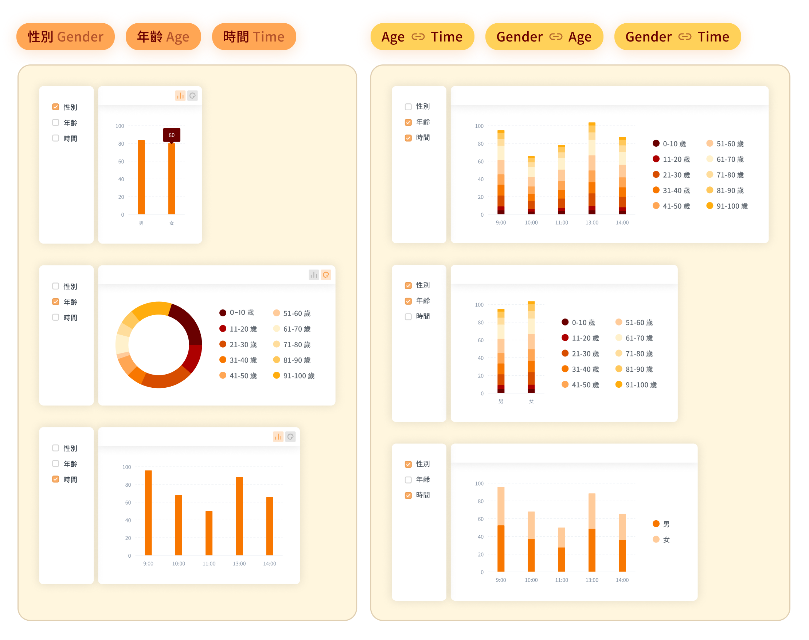
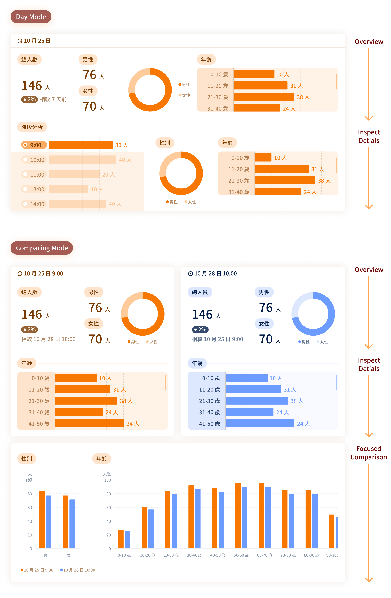
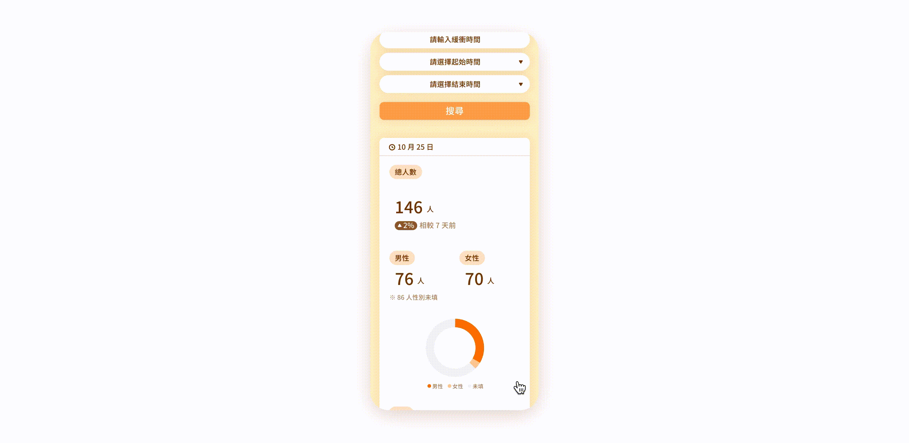
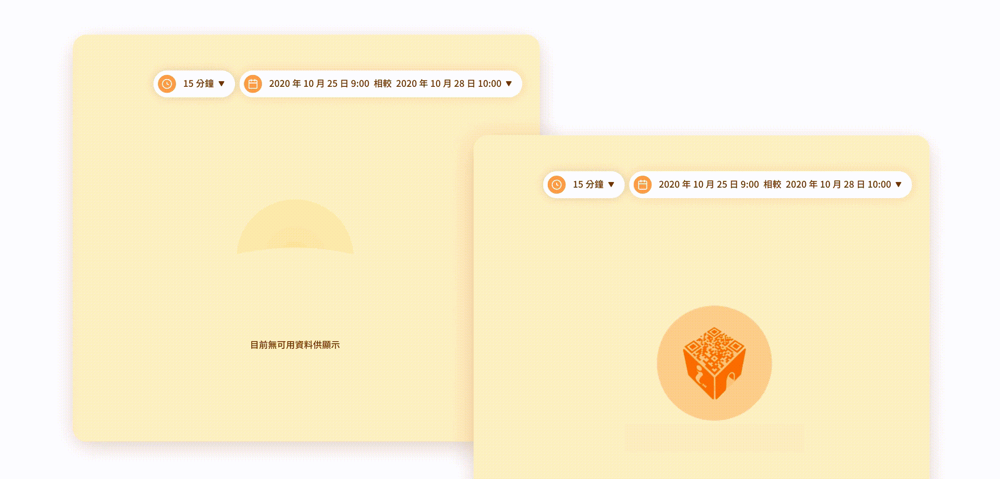

Event-Checkin System Design
OVERVIEW
This is a pandemic project.
As the virus raging on the planet, people here in Taiwan were carrying on a rather peaceful lifestyle. However, the policy were still implemented to keep the society in cautious.
Therefore, the participants in large campaign and gathering need to be tracked and recorded.
Especially for religious institutions, as they tend to hold weekly events and having crowded attendants. Joining the development team, I worked as the designer to customize the check in system dedicated for a Catholic church.
As the virus raging on the planet, people here in Taiwan were carrying on a rather peaceful lifestyle. However, the policy were still implemented to keep the society in cautious.
Therefore, the participants in large campaign and gathering need to be tracked and recorded.
Especially for religious institutions, as they tend to hold weekly events and having crowded attendants. Joining the development team, I worked as the designer to customize the check in system dedicated for a Catholic church.
COLLABORATE WITH
Project Manager
Front-End Engineer
Back-End Engineer
Front-End Engineer
Back-End Engineer
MY ROLE
UX / UI Design
Branding Design
Style Guide Definition
Branding Design
Style Guide Definition
PHASE 1 CHECK-IN PROCESS DESIGN
Identifying Issues
Through on-site observation, development team create a simple login page which can be accessed by a QR code, and we found:
1. People clustered when the event about to began, therefore the check in process didn’t have enough time to finish.
2. Scanning function was varied between devices, causing the check in process might fail to access the check in page in the beginning.
1. People clustered when the event about to began, therefore the check in process didn’t have enough time to finish.
2. Scanning function was varied between devices, causing the check in process might fail to access the check in page in the beginning.

Reconstruct User Flow
Scenerio 1
The registration status was automatically checked through the login process, which combined the login and the sign-up functions together.
The registration status was automatically checked through the login process, which combined the login and the sign-up functions together.

Scenerio 2
Generating personal QR code to finish the check-in process offline.
(Only available when operating with PC/laptop)
Generating personal QR code to finish the check-in process offline.
(Only available when operating with PC/laptop)

Branding Design

Prototype

Style Guideline
Principles:
1. Font size was scaled up to be elder friendly.
2. High color contrast was needed to be easily recognizable, and accessible.
1. Font size was scaled up to be elder friendly.
2. High color contrast was needed to be easily recognizable, and accessible.

PHASE 2 CMS DESIGN FOR ADMIN
Goals: Computing the weekly collected data into the useful insight.
Even the events were usually held on Sunday, there were multiple sections held in different periods. The church also found that different sections tended to have different kind of participants. In order to provide the content that could be better resonated within the mass, the church would also like to know more about the characteristics that varied between the participants by sections.
Deciding the Analytical Division
Age, gender, and time were the 3 primary division that could define the participants. Under the circumstance that the church wasn’t quite sure what kind of analytical method would generate the most useful insight. The development team decided to explore the function through a more flexible direction.

Iterating Design
However, even the function was designed to provide the user with the flexibility to customize the analytical division. We found the church was not keen to the analytical mindset. Therefore, the development team decided to follow a more intuitive way, in order to guide the church to build a more comprehensive mental model, and generate a brief yet thorough overview of the data itself.

User Flow
Scenerio 1
Having a quick overview of the data within a specific time slot.
Having a quick overview of the data within a specific time slot.

Scenerio 2
Focusing on 2 different time slot with further comparison.
Focusing on 2 different time slot with further comparison.

Assisting Features
1. Checking up the composition of the different period within one day.
2. Setting up the definition of the buffering time to have a more precise comparison.
2. Setting up the definition of the buffering time to have a more precise comparison.

State Motion Design

Next
1. Subscription-Based
In order to grow the system into a more scalable and profitable product.
2. Cross Disciplinary Applied
Providing more event-holders with check in flexibility and the data insight from the attendants.
In order to grow the system into a more scalable and profitable product.
2. Cross Disciplinary Applied
Providing more event-holders with check in flexibility and the data insight from the attendants.